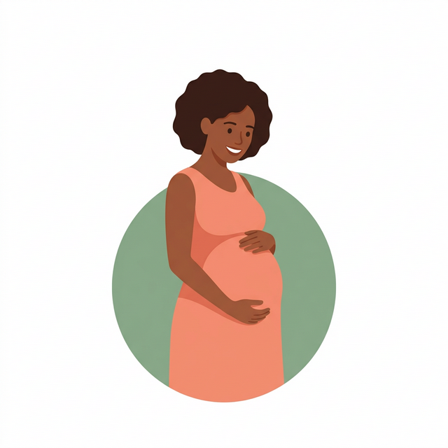

Gerar Vida

Sua jornada pré-natal completa com sua clínica começa aqui. Acompanhe tudo com carinho e tecnologia.
Explore o desenvolvimento semanal com imagens interativas e receba dicas de saúde personalizadas.
Serviços exclusivos da sua clínica no app:
Médico(a) Dedicado ao seu Pré-natal
Resultados de Exames Online em 24h
Canal Direto com sua Equipe de Saúde
Tire dúvidas a qualquer hora pelo chat